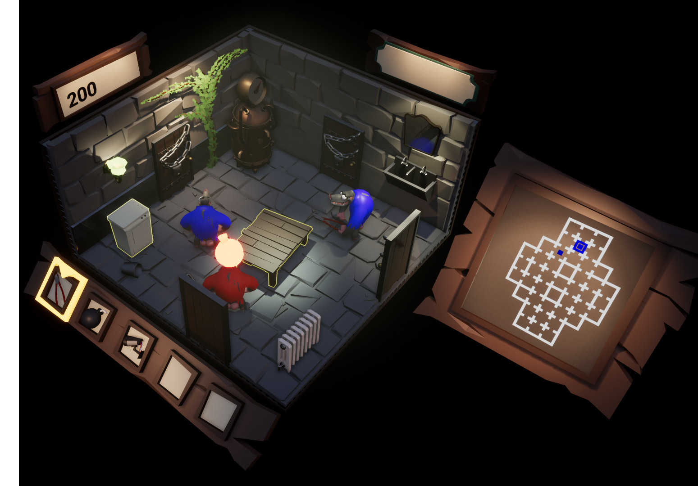
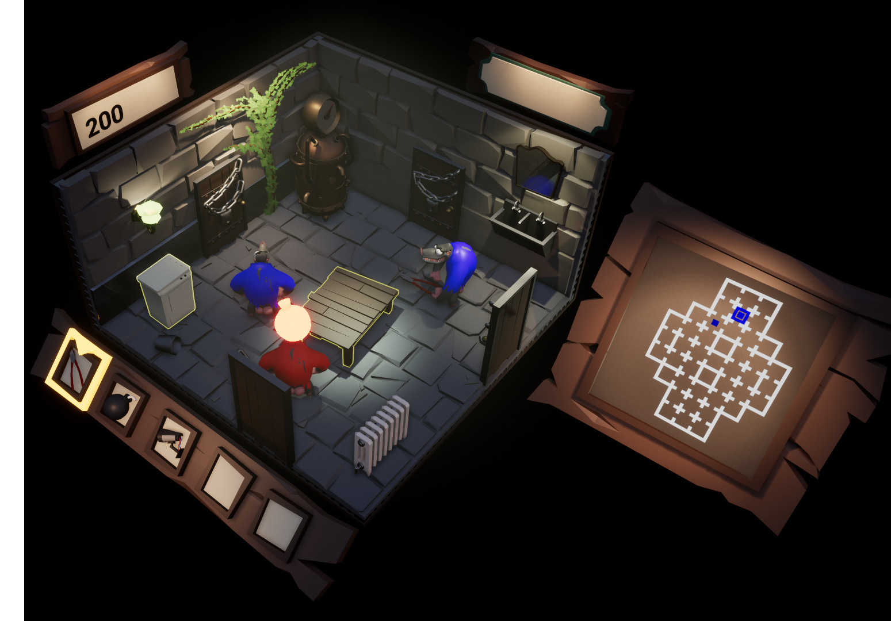
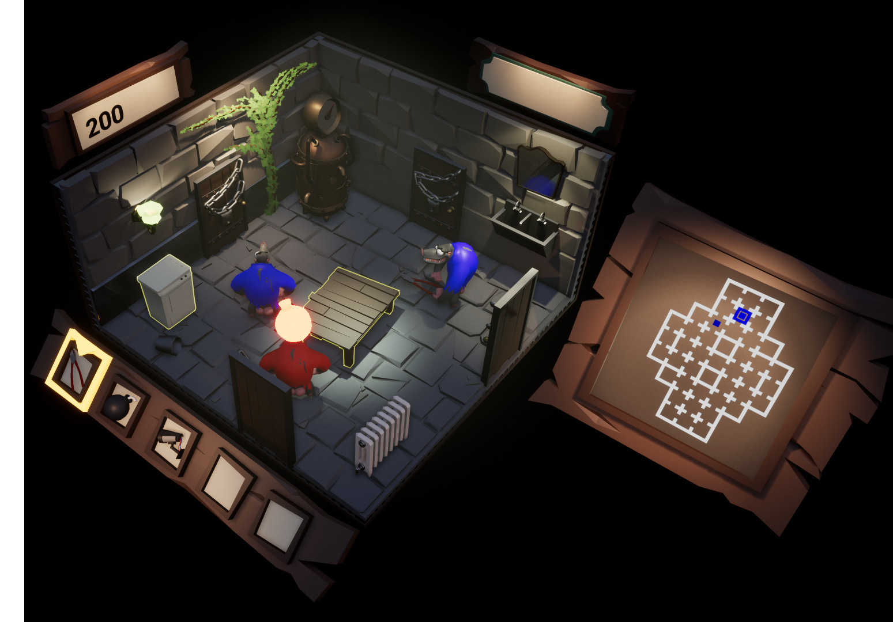

I love developing games, and have experience in varying subjects, with a focus on gameplay and VR. I excel at creating features reliably and quickly in collaboration with
a team of designers and artists. Also, because of my interest in prototyping, I have worked with a wide array of subjects, like inverse kinematics, math libraries,
networking and much, much more. I'm also a coding enthousiast, and I'm part of the C++ expert group at my college. Here are some of my preferred tools:
Unreal Engine 411 projects5 Years
C++11/14/17 7 projects 3 Years
GitHub 6 projects 2 Years
Perforce 8 projects 3 Years
Godot 2 projects 1 Year
Skills & Education
I'm currently attending college: Breda University of Applied Sciences International Game Architecture and Design (Website)
- Bachelor: Creative Media and Game Technologies (expected 2016-2020)
- Master: Game Technology (expected 2020-2021)
Besides game engines and programming languages, I am also proficient at iterative development using Scrum and Kanban,
and the tools that come with those, such as JIRA. I speak 4 languages: Dutch natively, I'm highly proficient at English (C2),
and I know basic German and French. The rest of my skillset can be found below (order of experience).
Below are a few of the projects that I have worked on over the last few years, click on any of them to see my role and more details.
I am best at working in Unreal Engine 4 for developing games. I am a quick study and have worked on projects in large codebases and custom
engines, so creating projects in new or different engines will not take me long.
For code snippets and an overview of projects outside of my education, here is the link to My GitHub.
Bioside UE4 VR Shooter
Shattered Lights UE4 VR Horror
BaBooms UE4 Multiplayer
TiFrame C++ Game Framework
Game Jams! all sorts
Bioside: 0G VR Shooter
I was a rapid prototyper and lead programmer on this project.
We worked in a team of 19 people to create a VR shooter with innovative movement mechanics.
My contributions:
- 3 guns and 3 grenades.
- Holstering system for weaponry.
- Implementing onepagers for prototypes.
- Communication point for the 7 programmers in the team.
This game doesn't have gravity. That means you're pulling yourself around the level while shooting rocket launchers, machine guns, revolvers and more at hostile drones. Creating these
weapons was amazing, working with gameplay designers to get everything to feel just right. The story of the game is that you're boarding a ship where the AI has gone rogue, and you're there
to shut it down forcefully. Getting the movement under control is tricky at first, but when you get used to it you are flying around the ship shooting things left and right.
Some more details on my work on this project. I was primarily developing gameplay for this project. I developed a gameplay event trigger system, so that our designers could easily implement
things like enemy spawning, or moving onto the next part of the tutorial. Besides that, I was focussed on implementing weaponry, as specified before. I worked closely together with two designers to really get the weapons to feel correct and behave in a suitable way for our game.
I created three different grenades. The first was a grenade that either pushed or pulled all physics objects, including enemies. The second grenade is a threat detector, that shows all enemies within a certain radius through walls, for easy targeting and executing. The third grenade is more conventional: an explosive knife that sticks in your enemies, and then explodes, killing your targets.
Besides the grenades, I also implemented several guns. The first was an assault rifle/shotgun hybrid called "The Metalstorm" that you could use with either one or two hands, with a functional red dot sight for VR, and magazines that you can physically pull out to reload it. The firing speed was graph based, the less bullets you have, the slower it fires. It also had a secondary fire, which shot all of your bullets in a shotgun spread, but you needed to hold the gun with both hands to use it. I also created a Rocket Launcher that had manual guidance capabilities, and a lock-on system for tracking rockets. Besides that, I also worked on the revolver, giving it a flick forward to open it up so you could reload it. In the end, even though it looked really cool, we decided to remove the reloading systems from the game to give a smoother experience. Tossing your guns away was more fun in VR than trying to reload them.
The holstering system was probably one of the biggest challenges I faced on this project, tech wise. Having the holsters follow the players head movement felt very unnatural, but fully simulating a body in zero gravity was impossible, scope wise. In the end I extrapolated a position near the hips and near the shoulders of the player based on their hand location and the head rotation, but it could still be improved more. It was also implemented in a rush, as we came up with it less than two weeks before release. It worked out in the end, and ended up making the game more fun.
I also implemented the onboarding robot and all of it's voicelines and all the triggers to activate those voicelines two days before release.
Here are some screenshots:
Shattered Lights: Year-long UE4 VR Horror Game.
Releasing on Steam soon!
What makes this horror game special is that it is in full room scale, which means no player locomotion whatsoever, no teleporting or weird swinging around with your arms. We make the level
traversable by using Non-Euclidean spaces, like in the game Antichamber, allowing the player to move an indefinite distance in the same 3x3 meters space.
Duration: 32 weeks.Team: ~18 people.Role: Lead Programmer/Game Programmer.When: September 2018 - (expected) June 2019
I am creating the player interaction systems, inverse kinematics and other hand logic.
Some of my contributions:
- Inverse kinematics for the fingers.
- All other hand and grabbing logic.
- Interaction system that supports all physics objects.
- Created the VR main menu.
- QA reports and maintaining the bug database.
- Physics collision handling on movable skeletal meshes.
For this project, we were taught how to properly research and explore a genre, which was VR horror for us. We researched the target audiences, horror classics and much more for the first
8 weeks of development. We then created a proper vertical and horizontal slice in the 8 weeks after that, to deliver a short but terrifying experience. That is the state of our project now.
Our team is confident that we can make a successful game out of this project.
We've turned this into one of the top projects of our year, even getting showcased on the Vive port twitter before it was even released.
BaBooms: Unreal Engine 4 Multiplayer Game.
Technical challenges
- Creating a multiplayer game as the only networking programmer
- Time period was only 6 weeks
- Very small team, high pressure environment.
I created the base for the project and did all the networking logic, and part of the gameplay logic.
For this project, I started out as the only programmer. I was in charge of making the gameplay, and to get it to work on a local network. Later on, more programmers joined the team,
although my role stayed the same.
Duration: 6 weeks.Team: 13 people.Role: Network programmer.When: May and June 2017

This is a 4 player team based game that's all about sabotaging your opponents while trying to find specific monster parts. The players control hopping baboons who
are trying to build a monster out of limbs. The parts are scattered around the map and the goal is to collect all parts and bring them back to your own lab, to bring the monster to life.
The first team to get all the parts wins the game. You're able to place traps and utilities around the level to delay or your opponents or gather information.
Some more details on my work during this project. This was a first year project, so we were still new to UE4, and we decided we wanted to create a multiplayer game. We had 6 weeks to develop this game, so it's fair to say that we overscoped slightly. I was the only programmer during the first two weeks, which meant that I had to not only create a working multiplayer demo using UE4's replication system, but also implement the initial gameplay features such as player movement, object interaction and room traversing.
Our project passed the first project culling, giving us two more weeks to flesh out the gameplay to something that looks remotely enjoyable. I got an extra programmer in the team, who had no networking experience, so the networking part was still my responsiblity. After those two weeks, we had a semi-playable game with two teams consisting of two players per team. There wasn't much gameplay yet, except for pressing F on objects to search them and placing traps on those objects using E, but the core game loop was implmented (connecting, finding the parts, winning, and disconnecting).
Our project then passed the second culling round, giving us a total of 13 people, including 4 programmers, who had to work with the hastily assembled networking system that I, as a first time networking developer, wrote in the first four weeks. Of course, code quality was not up to standard, and it was incredibly bugged out. We managed to pull the systems together so it was at least playable, and we ended up getting the "Best Game Programming" award for Babooms that year!
Although this was just a school project, I learned the basics of networking from these 6 weeks of development.
Technical challenges
- Creating a renderer
- Custom mesh loader
- UI implementation
- Entity Component System
Project details
What initially started as a personal project to learn more about rendering later developed into a basic C++ framework that supports rendering, resource loading and management,
uses a entity component system to manage objects. I'm using ImGUI to help me create the UI. This is a personal project, and I have written all the code for it by myself.
Our GGJ 2019 game, we created a multi-year, multi-disciplinary team and created a really cool game with our team of 8.
A charming adventure puzzler about a little robot who lost its way. You awaken
in a frozen landscape, with your last bit of battery power you roll towards a power station and restore part of your strength. Reinvigorated, you set out on your journey back home. Explore
the frozen landscape to discover parts to upgrade yourself and use your newfound abilities (like a magnet and a laser) to traverse the landscape and restore power to a terraforming pylon in
order to melt the wall of ice that blocks your path home.
A less amazing result, but a far smaller and more inexperienced team. For the Epic MegaJam, we created this game in one week with only three developers. One of us had no experience in creating games but could draw quite well. Another did
the 3D art and character designs, while I did the programming, audio, and all implementations for art and animation.
The first ever Game Jam for all of us, we created a small game about a spirit protecting its forest home. In our team of 7 first year game developers, we managed to put down a relatively good result. I was the only programmer on the team,
so I did all of the game logic, like player movement, attacks and camera work. The only thing I didn't end up doing was the AI, as a designer wanted to learn a bit more about how AI works in Unreal Engine 4.
 I love developing games, and have experience in varying subjects, with a focus on gameplay and VR. I excel at creating features reliably and quickly in collaboration with
a team of designers and artists. Also, because of my interest in prototyping, I have worked with a wide array of subjects, like inverse kinematics, math libraries,
networking and much, much more. I'm also a coding enthousiast, and I'm part of the C++ expert group at my college. Here are some of my preferred tools:
I love developing games, and have experience in varying subjects, with a focus on gameplay and VR. I excel at creating features reliably and quickly in collaboration with
a team of designers and artists. Also, because of my interest in prototyping, I have worked with a wide array of subjects, like inverse kinematics, math libraries,
networking and much, much more. I'm also a coding enthousiast, and I'm part of the C++ expert group at my college. Here are some of my preferred tools:


 
